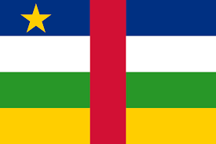

Visualiseur Cartographique - République Centrafricaine
Sources des données et des limites administratives: OCHA. Les données, désignations ou frontiéres utilisés dans cette aplication ne sont pas garanties sans erreur et n´impliquent en aucun cas la responsabilité ni l´approbation des partenaires ou organisations associées.
